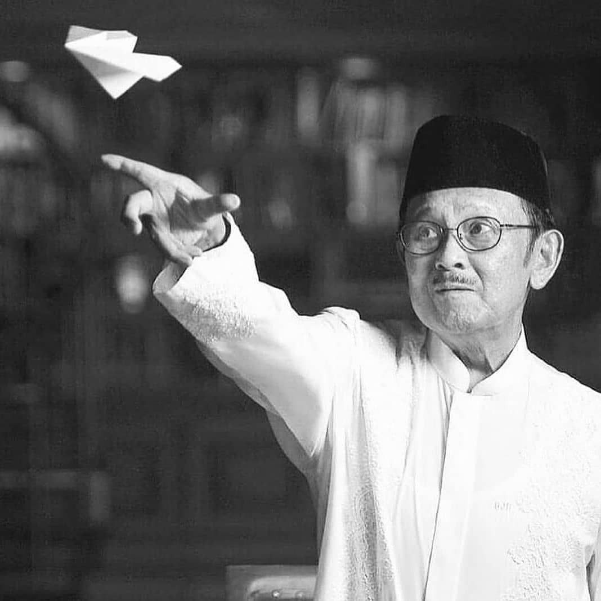

1.Bacharuddin Jusuf Habibie

Bacharuddin Jusuf Habibie, atau lebih dikenal sebagai BJ Habibie, adalah seorang ilmuwan dan insinyur Indonesia yang juga pernah menjabat sebagai Presiden ke-3 Republik Indonesia. Ia dikenal sebagai "Bapak Teknologi Indonesia" dan memiliki kontribusi besar dalam bidang teknologi, khususnya dirgantara.
Masa Kecil dan Pendidikan:
- Lahir di Parepare, Sulawesi Selatan, pada 25 Juni 1936.
- Sejak kecil tertarik pada ilmu pengetahuan, terutama teknik dan pesawat terbang.
- Menempuh pendidikan di Institut Teknologi Bandung (ITB) dan kemudian melanjutkan studi di Jerman.
- Meraih gelar Doktor di bidang Teknik Penerbangan dari RWTH Aachen, Jerman.
Karier:
- Ilmuwan dan Insinyur: Habibie dikenal sebagai seorang ahli pesawat terbang internasional dan mengembangkan teori "Crack Progression" yang sangat penting dalam industri penerbangan.
- Pejabat Publik: Pernah menjabat sebagai Menteri Negara Riset dan Teknologi, serta Ketua Badan Pengkajian dan Penerapan Teknologi (BPPT).
- Presiden RI: Menjadi Presiden ke-3 Republik Indonesia pada tahun 1998-1999.
Kontribusi dan Prestasi:
Kontribusi dan Prestasi:Pesawat N-250 Gatotkaca:
Salah satu karya terbesarnya adalah pesawat terbang N-250, pesawat pertama buatan Indonesia yang sukses melakukan penerbangan perdana.
Teori Crack Propagation:
Teorinya ini menjadi solusi untuk mendeteksi rambatan kerusakan pada konstruksi pesawat terbang.
Reformasi Demokrasi:
Di masa kepemimpinannya, Habibie mendorong kebebasan pers dan partai politik, serta pelaksanaan pemilu demokratis.
Warisan:
- BJ Habibie dikenal sebagai sosok inspiratif yang mendorong generasi muda untuk terus belajar dan berkarya.
- Ia meninggalkan warisan penting dalam bidang teknologi, khususnya dirgantara, dan dalam mendorong demokrasi di Indonesia.
Pesan Inspiratif:
- BJ Habibie selalu menekankan pentingnya pendidikan dan semangat untuk terus belajar dan berkembang.
- Ia mendorong masyarakat, terutama generasi muda, untuk memiliki mimpi besar dan berusaha mewujudkannya